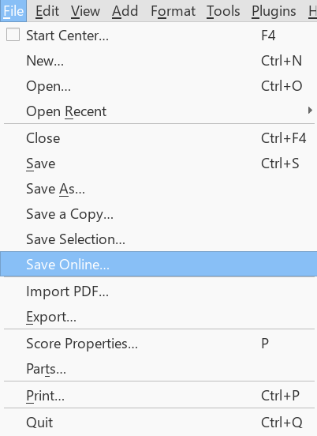
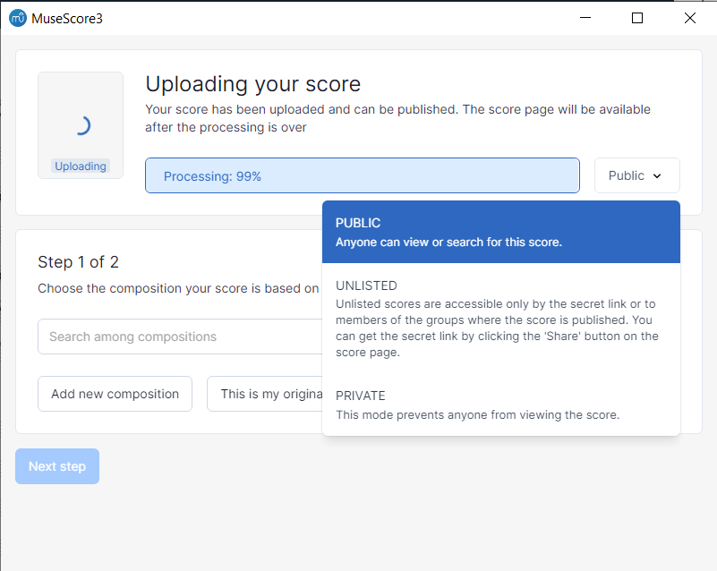
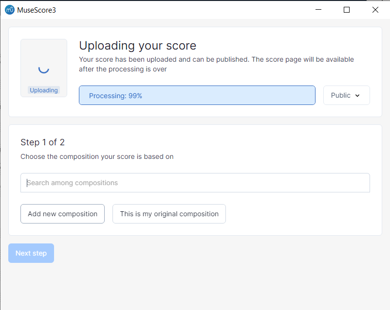
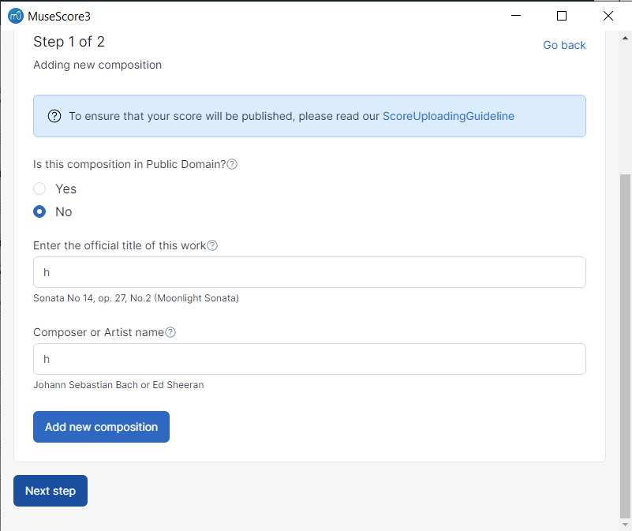
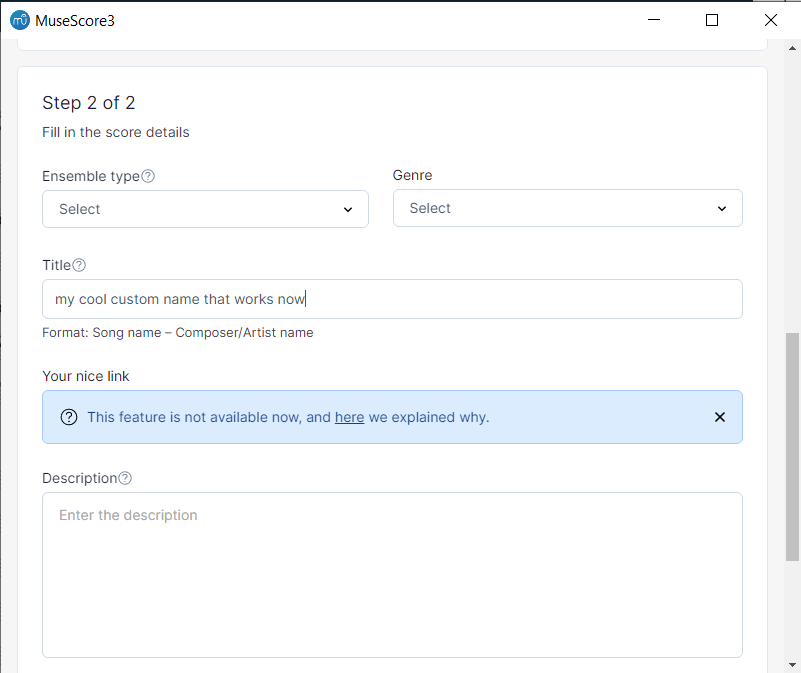
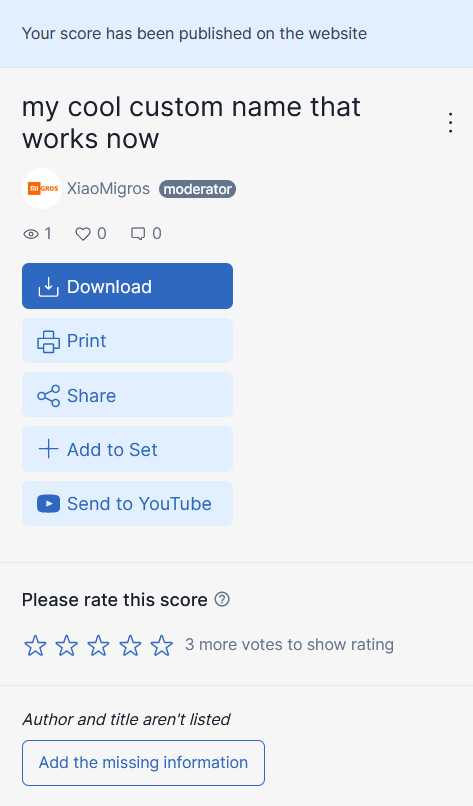

1. From within MuseScore, go to File/Save Online

Uploading via MuseScore.com's upload menu probably works as well, but hasn't been tested
(also you shouldn't really use it for other reasons)
2. Click through the menu until you get to the upload menu, then make the score public

This tutorial is only needed for public scores as naming only affects them
3. Select the 'Add New Composition' option

4. Enter any title and any composer
DO NOT PRESS THE 'ADD NEW COMPOSITION' BUTTON
Select the 'Next Step' button instead thanks

The information won't be visible or saved anywhere so put literally anything except empty
6. Enter the remaining score information, then 'Publish'

7. Done

Please note:
- No composer information is assigned to the score, so it won't be discoverable through that system.
- You will have to re-enter the title/composer information every time you update the score
- There's no guarantee this method will work when you are reading this, but it does as of the time of writing (20230315)